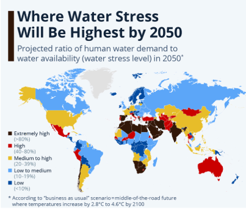

Our mission: prevent water waste before it happens.
FlowRing exists to make everyday conservation effortless, starting at the tap.
Water stress is accelerating.
By 2050, roughly half of the world’s population is projected to live in water‑stressed areas.
- Growing cities are drawing more water than local sources can replenish.
- Everyday household use (showers, dishes, brushing teeth) compounds into billions of wasted liters.
- Most tools focus on leaks after they happen — not on behavior while water is flowing.

FlowRing started with a simple question: what if the easiest place to save water is at the exact moment we turn on the tap?
Homes already have meters, apps, and dashboards that show usage after the fact. But by the time you see a monthly bill or a chart, the water is already gone. We wanted a way to gently interrupt waste while it’s still happening — without shaming people or forcing them into a complicated smart‑home setup.
FlowRing clips onto a standard faucet handle and uses on‑device intelligence to recognize when water has likely been running longer than necessary. It responds with escalating light cues: a soft glow at first, then a more insistent signal that says, “hey, you might be done here.”
Instead of tracking you or recording what you do in your home, FlowRing focuses on a single, high‑impact behavior: leaving water running just a little too long. That’s where small, everyday decisions add up to meaningful savings over months and years.
What we care about
- Effortless adoption. No plumbing, no hub, no installer. Clip it on and go.
- Respect for privacy. No cameras, no microphones, no continuous behavioral tracking.
- Real‑world impact. Designed to work in rentals, family homes, and shared spaces — not just high‑end smart homes.
We’re building FlowRing for people who want to do the right thing for the planet, but don’t have time to think about every faucet turn. If that’s you, we’re glad you’re here.